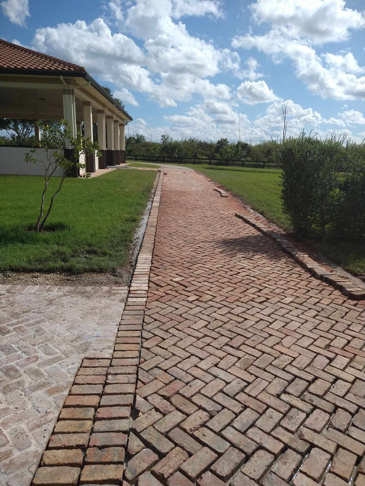

Many homeowners feel anxious about hiring a contractor because they don't know what to expect. At Pavers Ordonez, we believe transparency builds trust. Here's a complete walkthrough of exactly what happens from the day you call us to the day you're walking on your new pavers.
Step 1: Free Consultation & Estimate
We visit your property, take measurements, discuss your design preferences and budget, and review material options. We'll show you physical samples of different paver types and colors. Within 48 hours, you'll receive a detailed written estimate with no hidden costs. This step is completely free and there's no obligation.
Step 2: Project Scheduling
Once you approve the estimate and we collect a deposit (typically 30%), we schedule your project. Lead time is usually 1–2 weeks depending on the season. We'll give you a specific start date, not a vague window.
Step 3: Site Preparation
This is where the real work begins. We excavate the project area to the required depth (typically 8–12 inches for driveways, 6–8 inches for patios). All soil, old concrete, or existing pavers are removed from the property. We then grade the subbase for proper drainage slope — this step is critical and is where many budget contractors cut corners.

Step 4: Base Installation
We install 4–6 inches of crushed limestone base (more for driveways that handle vehicle loads), compact it with a plate compactor in multiple lifts, then add a 1-inch layer of coarse bedding sand. The sand is screeded perfectly level. This base layer is what determines whether your pavers stay flat and stable for 20+ years or start shifting within 2.
Step 5: Paver Laying
Pavers are laid by hand in the chosen pattern, starting from a fixed corner or straight edge. We check constantly for alignment, level, and consistent joint width. Cuts are made with a wet saw for precision. This phase is the most visible and is where craftsmanship really shows.
Quality Check: A properly installed paver surface should have less than 3/16" variation in flatness over any 10-foot span. We check this before moving to the next step.
Step 6: Edge Restraints & Compaction
Plastic or aluminum edge restraints are spiked into the base around the entire perimeter to keep the field pavers from spreading over time. Then the entire surface is compacted again with a plate compactor fitted with a rubber pad to set the pavers into the bedding sand without damaging them.
Step 7: Jointing Sand & Final Cleanup
Polymeric sand is swept across the surface, filling all joints. The surface is then lightly misted with water to activate the binding agent, then blown clean with a leaf blower. The result is a firm, weed-resistant joint that looks sharp and lasts for years.
Step 8: Final Walkthrough
We walk the completed project with you, explain care and maintenance, and collect the remaining balance only when you're satisfied. Most residential projects are completed in 2–4 days.
Ready to get started? Call (561) 970-1917 for your free consultation.